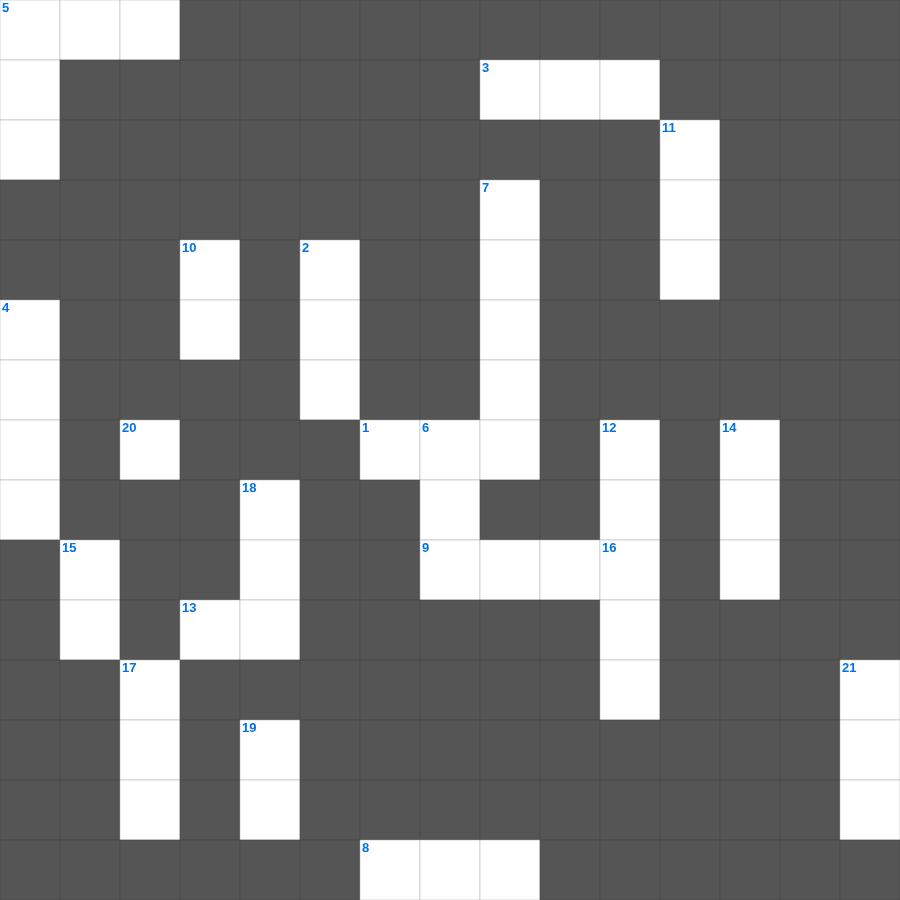

성경 상식: 지명(신약)
성경 상식의 말씀을 퀴즈로 배우는 성경 상식 무료 성경퀴즈입니다. 가로 힌트와 세로 힌트를 보고 23개의 단어를 맞춰보세요. 인쇄도 가능하고 정답 확인도 바로 되니 소그룹 모임이나 가정 예배 시간에도 활용하실 수 있습니다.

📝 가로 힌트
1. 이스라엘이 외칠 때 무너진 성
3. 삼손의 힘의 비밀을 알아낸 여인
5. 이스라엘이 광야에서 보낸 년수
8. 함께 가져온 물고기의 마리 수
9. 예수님을 은 30에 판 제자
13. 곡물로 드리는 제사
20. 모세가 반석을 치자 나온 것
📝 세로 힌트
2. 이것 하지 말라(남의 물건을 가져감)
4. 할 수 있거든이 무슨 말이냐 믿는 자에게는 이것이 없느니라
5. 노아의 방주에 비가 내린 일수
5. 예수님이 광야에서 금식하신 일수
6. 이사악의 아내
7. 바울이 아덴(아테네)에서 복음을 전한 곳
10. 물고기 배 속에서 회개한 선지자
11. 바울이 2년 동안 가르쳤던 서원
12. 예수님이 십자가에 못 박히신 곳
14. 모세의 누나
15. 야곱이 사다리 환상을 본 곳
16. 어린아이가 가져온 보리떡의 개수
17. 베드로와 안드레의 고향
18. 죄를 속하기 위해 드리는 제사
19. 시편 다음 책
21. 이스라엘의 유일한 여성 사사
🏷️ 키워드
성경 상식 무료 성경퀴즈, 성경 상식, 십자가로세로, 성경퀴즈, 말씀퀴즈, 가로세로퍼즐